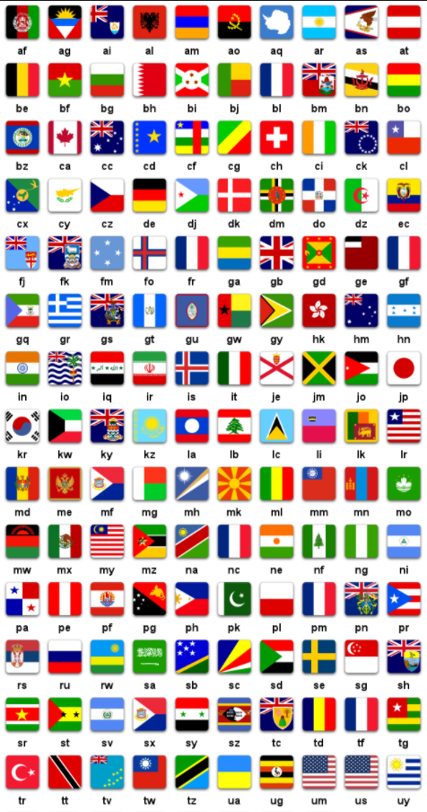
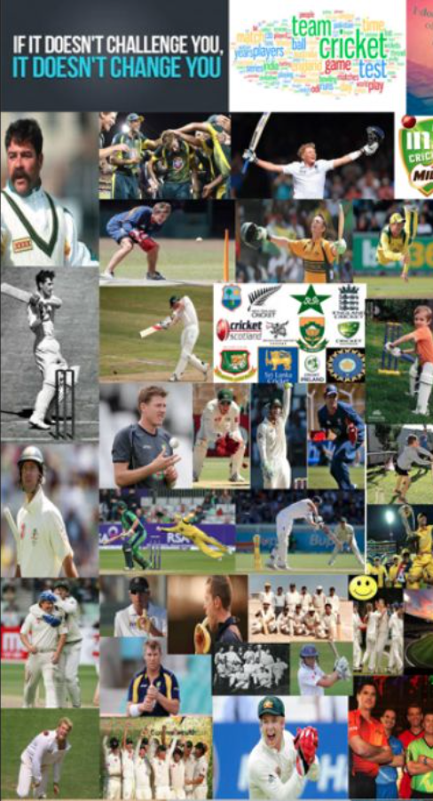

Cricket is a sport played in many different countries around the world. I have been playing Cricket since I was a little kid, when I moved to America, I found out that Cricket wasn’t played here and not many people knew about it. After telling a lot of people what Cricket is they became interested and wanted to know more about it. Therefore, my one goal is to let people know what Cricket is and how it’s played.
My name is Jay Lakhani. As mentioned before, Cricket is my passion. I love to coach my favorite sport to people who are interested in sports around the world. This sport is originally from england but played by most of the countries around the world. Here are many versions of the game, for example, ICC and T20 are different tournaments the audience can watch. The game is played the same way, but just with some rules altered. In India, cricket tournaments are like a holiday. Hopefully, my passion about this sports is shared to you all.
Thank you for visiting cricketFUZZ. All the concerns and questions will be answered. I would love to connect with new people on my blogging site. ~ Jay Lakhani